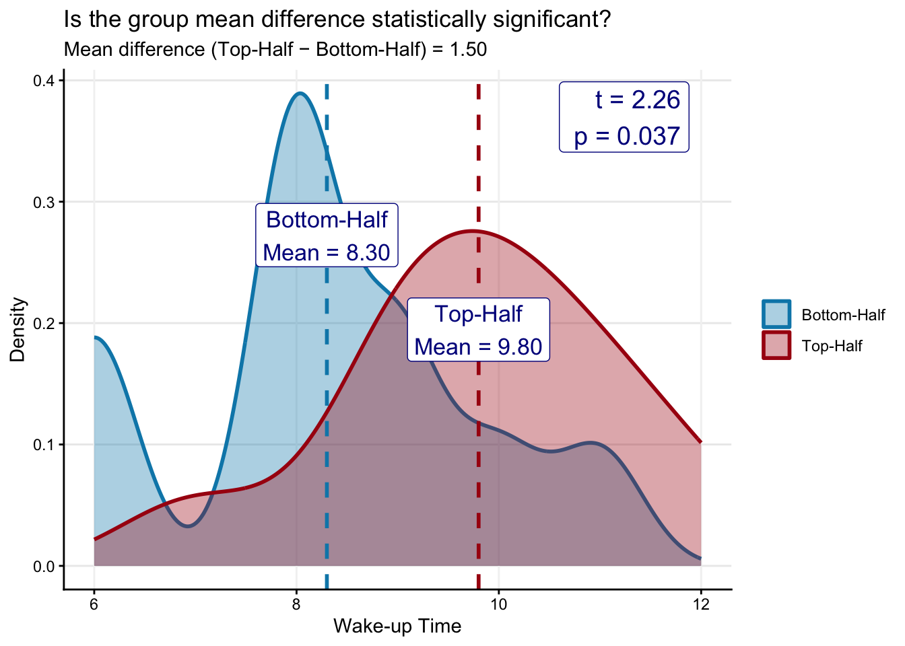
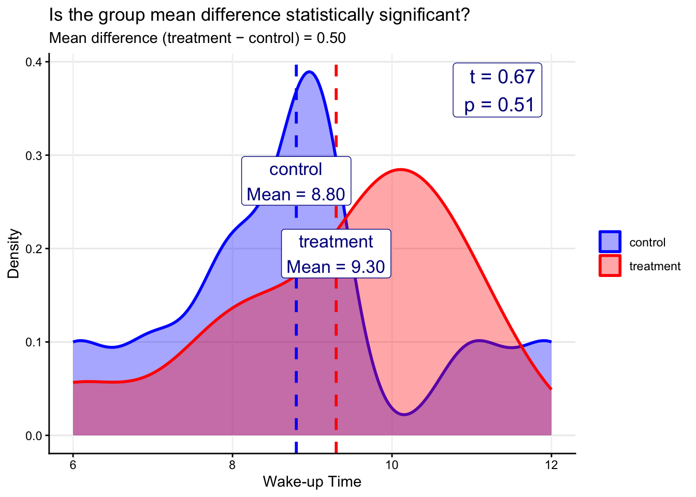
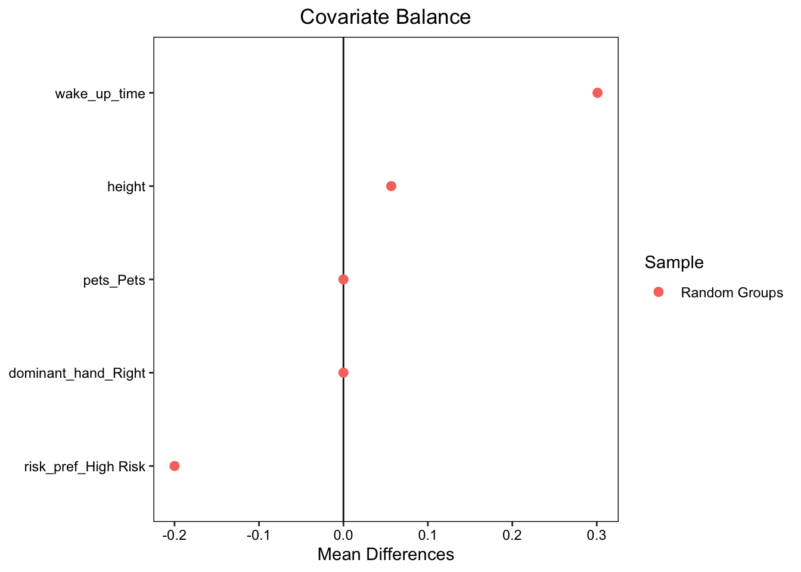

library(tidyverse)
library(here)
library(cobalt)
library(gt); library(gtsummary) # Tables
library(jtools); library(sjPlot) # Regression output
library(interactions); library(emmeans) # Plot interaction
library(praise); library(beepr) # Fun
source("load_plot_functions.R")Lab Week 9 - Evaluating Experimental Data
PSY 150: KEY
Outline
- What does it mean when a statistical model is said to be “unbiased”?
- Create randomly assigned groups using the PSY 150 class survey data
- Compare groups to check covariate balance
- Analyze a pre-post experiment with regression
- Interpret the Average Treatment Effect in a model with an interaction term
Lab preparation:
- Load libraries (R packages)
- Load prepared plotting functions
What does it mean when a statistical model is said to be “unbiased”?
Key idea: When treatment is randomly assigned, the estimated treatment effect is unbiased over the long run average because the assigned groups should have no systematic bias.
Link: Unbiased Estimator Plot
Read in psy150 class survey responses collected Week-1
- Read in the data file named
psy150_survey_S26.csv - Specify categorical variables as
factors - For factor
risk_prefre-orderlevelsand changelabels
psy150_data <- read_csv(here("data", "psy150_survey_S26.csv")) %>%
mutate(across(c(pets, fav_season, dominant_hand), as.factor)) %>%
mutate(risk_pref = factor(risk_pref,
levels = c("Low Risk", # Response (preference) = "A sure $10"
"High Risk" # Response (preference) = "A 50% chance to win $24"
))) Create two equal sized groups by splitting the data frame in the middle
Top-Half: First 10 rows (observations)Bottom-Half: Remaining 10 rows (observations)
data_split1 <- psy150_data %>%
mutate(cut_in_half = if_else(row_number() <= n() %/% 2, "top", "bottom")) %>%
mutate(cut_in_half = factor(cut_in_half,
levels = c("bottom", "top"),
labels = c("Bottom-Half", "Top-Half"))) Question: Does this approach result in randomly assigned groups? Why or why not?
Response: __________________________________
Take a look at covariate balance across groups:
- Compare group means for covariate
wake_up_time - Check whether mean differences across groups are significant (two-sample t-test)
data_split1 %>%
select(cut_in_half, wake_up_time) %>%
tbl_summary(
by = cut_in_half, # The grouping variable
type = list(wake_up_time ~ "continuous"),
statistic = list(all_continuous() ~ "{mean} ({sd})")) %>%
modify_header(label ~ "**Variable**") %>%
modify_spanning_header(c("stat_1", "stat_2") ~
"**Split the Data Frame In the Middle**") %>%
add_p(list(all_continuous() ~ "t.test"))| Variable |
Split the Data Frame In the Middle
|
p-value2 | |
|---|---|---|---|
| Bottom-Half N = 101 |
Top-Half N = 101 |
||
| wake_up_time | 8.30 (1.57) | 9.80 (1.40) | 0.037 |
| 1 Mean (SD) | |||
| 2 Welch Two Sample t-test | |||
Are the two groups statistically different?
plot_t_test() includes:
- Distribution of
wake_up_timefor each group - Group-means and mean difference in
wake_up_time - Results of two-sample t-test model
plot_t_test(
data = data_split1,
group_var = cut_in_half,
outcome_var = wake_up_time,
title = "Is the group mean difference statistically significant?",
x_label = "Wake-up Time",
y_label = "Density",
colors = c("#0288b7", "#a90010")
)
Two-sample t-test
-----------------
Outcome: wake_up_time
Group: cut_in_half
Groups: Bottom-Half vs Top-Half
Mean difference (Bottom-Half - Top-Half): 1.5
t-statistic: 2.26
p-value: 0.037
Question: Are the groups “balanced” (is this an “apples-to-apples” comparison)?
Response: __________________________________
Question: What does the p-value tell us about the difference in wake_up_time between the two groups?
Response: __________________________________
Now Let’s Use Random Assignment to Split the Class Into Two Equal Sized Groups
We will call the groups “control” and “treatment” like in an experiment, but this is just for illustration (no one actually received a treatment).
set.seed(2026) # Use this number to have consistent results for class
data_split2 <- psy150_data %>%
mutate(random_groups = sample(rep(c("control", "treatment"), each = n()/2))) %>%
mutate(fav_season = factor(fav_season,
levels = c("Fall", "Winter", "Spring", "Summer")))Do the randomly assigned groups have covariate balance?
Create a covariate balance table for the class survey data (multiple covariates):
tbl_summary()calculates different statistics for continuous and categorical variables- Continuous variables are reported in format
Mean (SD) - Categorical variables (factors) are reported in format
Frequency (%)
data_split2 %>%
select(random_groups, wake_up_time, height, pets,
fav_season, dominant_hand, risk_pref) %>%
tbl_summary(
by = random_groups,
type = list(wake_up_time ~ "continuous"),
statistic = list(all_continuous() ~ "{mean} ({sd})")) %>%
modify_header(label ~ "**Variable**") %>%
modify_spanning_header(c("stat_1", "stat_2") ~ "**Randomly Assigned Groups**") %>%
add_p(list(all_continuous() ~ "t.test",
all_categorical() ~ "chisq.test"))| Variable |
Randomly Assigned Groups
|
p-value2 | |
|---|---|---|---|
| control N = 101 |
treatment N = 101 |
||
| wake_up_time | 8.80 (1.75) | 9.30 (1.57) | 0.5 |
| height | 65.30 (2.63) | 65.50 (4.25) | >0.9 |
| pets | >0.9 | ||
| No Pets | 1 (10%) | 1 (10%) | |
| Pets | 9 (90%) | 9 (90%) | |
| fav_season | 0.4 | ||
| Fall | 4 (40%) | 1 (10%) | |
| Winter | 2 (20%) | 4 (40%) | |
| Spring | 2 (20%) | 2 (20%) | |
| Summer | 2 (20%) | 3 (30%) | |
| dominant_hand | >0.9 | ||
| Left | 1 (10%) | 1 (10%) | |
| Right | 9 (90%) | 9 (90%) | |
| risk_pref | 0.6 | ||
| Low Risk | 6 (60%) | 8 (80%) | |
| High Risk | 4 (40%) | 2 (20%) | |
| 1 Mean (SD); n (%) | |||
| 2 Welch Two Sample t-test; Pearson’s Chi-squared test | |||
Are the two groups statistically different?
plot_t_test(
data = data_split2,
group_var = random_groups,
outcome_var = wake_up_time, # Try changing to `height`
title = "Is the group mean difference statistically significant?",
x_label = "Wake-up Time",
y_label = "Density",
colors = c("blue", "red")
)
Two-sample t-test
-----------------
Outcome: wake_up_time
Group: random_groups
Groups: control vs treatment
Mean difference (control - treatment): 0.5
t-statistic: 0.67
p-value: 0.51
Question: Are the groups “balanced” (is this an “apples-to-apples” comparison)?
Response: __________________________________
Question: Interpret the meaning of the p-value (in your own words):
Response: __________________________________
Plot Covariate Balance with a Love Plot ❤️ {cobalt}
- Continuous covariates: Are standardized so they are on a common scale.
- Binary covariates: Are un-standardized so differences are raw proportions.
# Add names of covariates to include in plot
covars <- c("wake_up_time", "height", "pets", "dominant_hand", "risk_pref")
bal.tab(
x = data_split2 %>%
select(all_of(covars)),
treat = data_split2$random_groups,
estimand = "ATE") %>%
love.plot(
sample.names = "Random Groups")
Analyzing Experimental Data: A Pre-Post Study Design
Cimprich & Ronis (2003) “An Environmental Intervention to Restore Attention in Women With Newly Diagnosed Breast Cancer”
Summary: A sample of 157 women with breast cancer participated in the study with 6 attention measures collected before scheduled surgeries. After their surgery they participated in a “nature exposure” intervention and attention was re-tested.
Disclaimer: The data used in this section is fictive (simulated) and is designed to parallel the results from the study Cimprich & Ronis (2003). Although the data is simulated to be realistic, results should not be interpreted literally as simulated data necessarily omits complexity found in real observed data (i.e., reported by a sample of participants).
Read in the simulated ‘replication’ data
nature_data <- read_csv(here("data", "Simulate_Cimprich2003.csv")) %>%
mutate(
time_point = factor(time_point, levels = c("before","after")),
nre_interv = factor(nre_interv, levels = c("control","treatment")))Take a look at balance across pre-treatment covariates
- Identify continuous and categorical covariates
- Look for balance/imbalance across intervention groups
- Evaluate results of difference tests (
p-value)
nature_data %>%
select(nre_interv, age, education_yrs,
race, marital_status, comorbid, surgery_extent, disease_stage,
attention_composite) %>%
tbl_summary(
by = nre_interv,
statistic = list(all_continuous() ~ "{mean} ({sd})")) %>%
modify_header(label ~ "**Variable**") %>%
modify_spanning_header(c("stat_1", "stat_2") ~ "**Experimental Conditions**") %>%
add_p(list(all_continuous() ~ "t.test"))| Variable |
Experimental Conditions
|
p-value2 | |
|---|---|---|---|
| control N = 1481 |
treatment N = 1661 |
||
| age | 54 (18) | 57 (19) | 0.13 |
| education_yrs | 15.3 (3.4) | 14.7 (3.3) | 0.12 |
| race | 0.049 | ||
| Caucasian | 124 (84%) | 124 (75%) | |
| Non-Caucasian | 24 (16%) | 42 (25%) | |
| marital_status | 0.9 | ||
| Married | 86 (58%) | 98 (59%) | |
| Single | 62 (42%) | 68 (41%) | |
| comorbid | 56 (38%) | 86 (52%) | 0.013 |
| surgery_extent | >0.9 | ||
| Lumpectomy | 80 (54%) | 90 (54%) | |
| Mastectomy | 68 (46%) | 76 (46%) | |
| disease_stage | 0.086 | ||
| 0 | 6 (4.1%) | 16 (9.6%) | |
| 1 | 88 (59%) | 102 (61%) | |
| 2 | 54 (36%) | 48 (29%) | |
| attention_composite | 49.4 (3.5) | 51.3 (3.5) | <0.001 |
| 1 Mean (SD); n (%) | |||
| 2 Welch Two Sample t-test; Pearson’s Chi-squared test | |||
Model 1: Look at pre-treatment differences by intervention group
time_point (0 = before, 1 = after): Pre-treatment / Post-treatment nre_interv (0 = control, 1 = treatment): Outdoor Activity Intervention
pre_treat_data <- nature_data %>%
filter(time_point == "before")
m1_pre_treat <- lm(attention_composite ~ nre_interv,
data = pre_treat_data)
tab_model(m1_pre_treat,
digits = 3, show.se = TRUE,
show.ci = FALSE, show.r2 = FALSE)| attention composite | |||
| Predictors | Estimates | std. Error | p |
| (Intercept) | 49.100 | 0.394 | <0.001 |
| nre interv [treatment] | 1.164 | 0.527 | 0.029 |
| Observations | 157 | ||
Model 2: Look at post-treatment differences by intervention group
post_treat_data <- nature_data %>%
filter(time_point == "after")
m2_post_treat <- lm(attention_composite ~ nre_interv,
data = post_treat_data)
tab_model(m2_post_treat,
digits = 3, show.se = TRUE,
show.ci = FALSE, show.r2 = FALSE)| attention composite | |||
| Predictors | Estimates | std. Error | p |
| (Intercept) | 49.644 | 0.402 | <0.001 |
| nre interv [treatment] | 2.755 | 0.570 | <0.001 |
| Observations | 157 | ||
Finding the “Difference-in-Difference”
Regression with interaction effects
- Main effects:
nre_intervandtime_point - Interaction effect:
nre_interv*time_point

Model 3: Estimate pre-post regression with interaction term
m3_interact <- lm(attention_composite ~
nre_interv +
time_point +
nre_interv*time_point,
data = nature_data)
tab_model(m3_interact,
digits = 3, show.se = TRUE,
show.ci = FALSE, show.r2 = FALSE)| attention composite | |||
| Predictors | Estimates | std. Error | p |
| (Intercept) | 49.100 | 0.413 | <0.001 |
| nre interv [treatment] | 1.164 | 0.551 | 0.036 |
| time point [after] | 0.545 | 0.565 | 0.336 |
| nre interv [treatment] × time point [after] |
1.592 | 0.776 | 0.041 |
| Observations | 314 | ||
Model 4: Add control variables to test sensitivity of treatment effect
- Are there significant differences for covariate control variable?
- Do the main effects and interaction term change after adding the controls?
m4_controls <- lm(attention_composite ~
nre_interv +
time_point +
nre_interv*time_point +
race + comorbid + surgery_extent + disease_stage, # Controls
data = nature_data)
tab_model(m4_controls,
digits = 3, show.se = TRUE,
show.ci = FALSE, show.r2 = FALSE)| attention composite | |||
| Predictors | Estimates | std. Error | p |
| (Intercept) | 49.555 | 0.653 | <0.001 |
| nre interv [treatment] | 1.091 | 0.562 | 0.053 |
| time point [after] | 0.528 | 0.570 | 0.355 |
| race [Non-Caucasian] | 0.203 | 0.492 | 0.680 |
| comorbid [Yes] | 0.076 | 0.401 | 0.849 |
| surgery extent [Mastectomy] |
-0.123 | 0.396 | 0.757 |
| disease stage | -0.341 | 0.348 | 0.328 |
| nre interv [treatment] × time point [after] |
1.586 | 0.780 | 0.043 |
| Observations | 314 | ||
Create a simple slopes plot to see the interaction effect
emm <- emmeans(m4_controls, ~ nre_interv * time_point)
emm_df <- as.data.frame(emm) %>%
mutate(ymin = emmean - SE,
ymax = emmean + SE)
ggplot(emm_df,
aes(x = time_point, y = emmean, group = nre_interv, color = nre_interv)) +
geom_line() +
geom_point(size = 3) +
geom_errorbar(aes(ymin = ymin, ymax = ymax), width = 0.08) +
labs(x = "Time Point ",
y = "Attention Total Score",
color = "Condition") +
theme_classic()
praise("${EXCLAMATION}!- You've ${created} something ${adjective}!"); beep(1)[1] "HURRAH!- You've invented something astounding!"